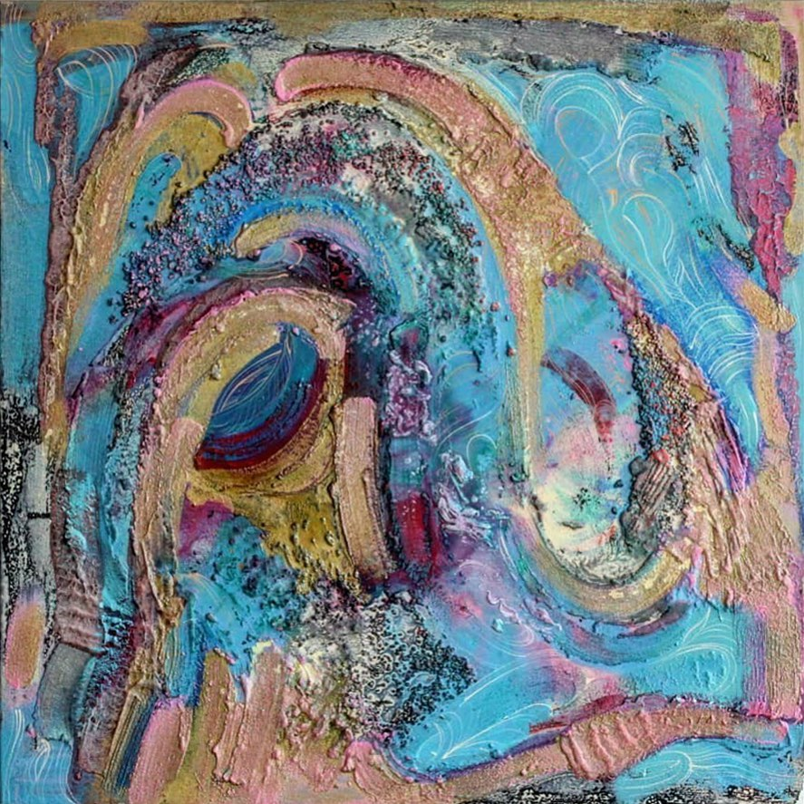

Активно працює у галузі дизайну інтер’єрів та середовища. Художник є яскравим представником мистецького життя Львова, брав участь у численних пленерах та колективних виставках. Серед них: «Всеукраїнська виставка-конкурс образотворчого та декоративно-прикладного мистецтва» (Київ, 2017), «Крок до моря» (Львів, 2018) , персональна виставка DeRerumNatura (Львів 2018), LvivArt Days (lviv,2018), Осінній салон (Львів 2018), 13 Аукціон надій по збору коштів на реставрацію скульптури Христа над церквою Боїмів (2018) , Lviv Art Days (2019) та інші. У формуванні неповторного мистецького почерку художника чи не найвагомішу роль відіграє природа. Як зазначає сам автор: «На своєму творчому шляху я не створював жодних кумирів, окрім природи. В ній я можу безкінечно черпати чисте натхнення, від неї переймаю майже все: фактуру, графіку, композицію. Намагаюсь писати так, як на мій погляд робила б сама стихія — вода, вітер, чи спалах світла. Адже саме природа є для мене починанням усього, що я можу осягнути. Вона ― мій вчитель». Автор на своїх полотнах трансформує власне бачення навколишнього світу.
